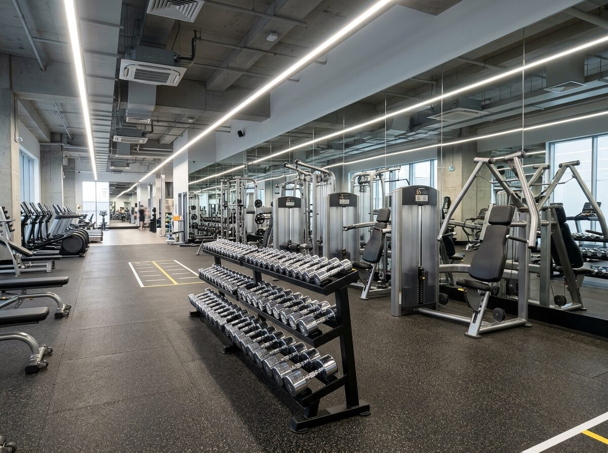

50 preguntas diseñadas específicamente para medir el umbral C1: inversiones sintácticas, condicionales mixtos, modales perfectos, voz pasiva y colocaciones formales.
Elige la palabra que completa con mayor precisión y naturalidad cada espacio del texto corporativo.
Dear Colleagues,
I am writing to notify you that the annual corporate symposium will take place next month.
In light of recent organisational changes, it is
that all senior project leads confirm their attendance by Friday.
Furthermore, we have made considerable efforts to
the registration procedures, thereby eliminating unnecessary bureaucracy.
Should you require any auxiliary equipment during your presentation, please
the technical coordinator well in advance.
Under no circumstances should external software be installed without prior
from our cybersecurity division.
Finally, we look forward to your valuable insights, which will undoubtedly
the collective dialogue.
Reading — Tarea 2: Text Cohesion (Reordenación de párrafos)
Ordena las siguientes frases para construir un texto coherente. La primera oración está fijada como anclaje. Usa los botones ▲ / ▼ o arrastra los elementos.
Reading — Tarea 3: Short Text Reading (Opiniones sobre Teletrabajo y Oficinas Centrales)
Lee las opiniones de cuatro profesionales (A, B, C y D) y asocia cada afirmación a la persona correcta.
👤 Persona A (Arthur — Ingeniero de Software)
While remote working spares me the daily ordeal of commuting, I find that spontaneous problem-solving suffers substantially. Without the casual hallway encounters where innovative ideas typically crystallise, our team often ends up scheduling redundant video conferences that stifle creativity rather than foster it.
👤 Persona B (Beatrice — Directora Financiera)
From an operational standpoint, relinquishing extensive downtown leases has yielded unprecedented savings that we have redirected towards research and development. However, maintaining corporate loyalty among recent graduates who have never set foot in our physical headquarters remains our most acute strategic dilemma.
👤 Persona C (Carlos — Diseñador UX)
The flexibility to orchestrate my workday around my peak creative hours has dramatically elevated the quality of my output. Nevertheless, the boundary between domestic life and occupational responsibilities has blurred so completely that unwinding in the evening requires conscious, deliberate discipline.
👤 Persona D (Diana — Consultora de Recursos Humanos)
A hybrid paradigm is unquestionably the only sustainable compromise. Full remote isolation invariably precipitates emotional detachment, whereas enforcing rigid physical attendance alienates top-tier international talent who demand geographical autonomy as a non-negotiable prerequisite.
Reading — Tarea 4: Long Text Comprehension (Emparejamiento de Títulos)
Asigna a cada uno de los 7 párrafos el título más adecuado. Recuerda que hay un título distractor que no corresponde a ningún párrafo. El sistema te avisará si repites un título.
3. Listening Component
Simulador con síntesis de voz británica (Web Speech API). Cada pista puede reproducirse un máximo de dos veces, tal y como estipula el reglamento oficial de Aptis. Incluye las 4 tipologías reales, incluidos los ejercicios de debate y atribución de opinión.
Tiempo oficial: 40 min10 Audios C1 (Escala 50 pts)Límite: 2 escuchas por audio
🎙️ Motor de Voz en Inglés:(Priorizando acento británico en-GB)
Modo de Corrección:
Modo Examen activo.
4. Writing Component
Las 4 tareas canónicas de Aptis ESOL General con contador de palabras en tiempo real, analizador inteligente de estructuras C1, modelos de respuesta y rúbrica interactiva del British Council.
Tiempo oficial: 50 min4 Tareas / 50 ptsTarea 4: 50% de la nota
📁 Convocatoria / Caso de Estudio Oficial (Writing):
Caso Activo: Caso A (Sports & Fitness)
Writing — Tarea 1: Personal Information Form (3 minutos)
You have recently joined an international sports and fitness centre. Complete the five questions below in 1 to 5 words each.
0 / 1-5 palabras
0 / 1-5 palabras
0 / 1-5 palabras
0 / 1-5 palabras
0 / 1-5 palabras
Writing — Tarea 2: Short Personal Response (7 minutos)
Please state your primary fitness objectives and your availability to participate in centre activities. Write 20 to 30 words.
0 / 20-30 palabras
Modelo C1 (28 palabras): "My primary goal is to enhance my functional cardiovascular endurance and muscular strength. I plan to utilise the gymnasium facilities primarily on weekday mornings and Saturday afternoons." Estructura clave: Infinitivos de propósito coordinados, adverbio 'primarily', colocación 'cardiovascular endurance'.
Writing — Tarea 3: Social Network / Club Interaction (10 minutos)
You are in the fitness centre chat room. Three members have posted questions regarding training habits and facilities. Respond to each member in 30 to 40 words each.
Jordan:"Hi! Do you prefer high-intensity group classes or independent weightlifting sessions?"
0 / 30-40 palabras
Modelo C1 (36 palabras): "I prefer independent weight training because it allows me to adhere to a structured progressive overload regimen at my own tempo. However, I occasionally attend interval training sessions to boost cardiovascular endurance and break monotony."
Emma:"What is the biggest obstacle that prevents people from maintaining a consistent exercise habit?"
0 / 30-40 palabras
Modelo C1 (37 palabras): "Undoubtedly, unrealistic expectations and lack of time management. Many beginners attempt overly aggressive workout routines, leading to physical burnout and early disillusionment, rather than cultivating sustainable micro-habits that seamlessly fit into their busy working lives."
Tariq:"The gym is introducing wearable biometric trackers during sessions. What is your view on this?"
0 / 30-40 palabras
Modelo C1 (38 palabras): "Biometric tracking provides valuable objective feedback on heart rate variability and caloric expenditure, fostering motivation. Nonetheless, it should remain entirely optional so members who prefer exercising without constant digital surveillance can do so freely."
Writing — Tarea 4: The Two Emails (Informal vs. Formal) (30 minutos)
Situación: Dear Members, To fund our upcoming gym floor renovation, monthly subscription fees will rise by 35% starting next month. Additionally, opening hours on weekends will be restricted to 8:00 AM – 2:00 PM. Existing annual contracts will be updated to reflect this adjustment. Fitness Centre Management.
1. Write an informal email to your gym partner, Jordan, expressing your reaction and suggesting an alternative plan (approx. 50 words).
2. Write a formal email to Centre Management expressing your dissatisfaction, explaining why the schedule reduction and fee hike are unfair, and proposing constructive alternatives (120 to 150 words).
Parte A: Email Informal a tu compañero Jordan (aprox. 50 palabras)
0 / aprox. 50 palabras
Modelo C1 Informal (49 palabras): "Hey Jordan,
Have you seen the email from the gym? Increasing membership dues by 35% while slashing weekend opening hours is utterly disgraceful! Many of us can only train properly on Saturdays and Sundays. We should definitely complain to management before this goes into effect.
Catch up soon,
Alex"
Parte B: Email Formal a la Gerencia del Centro (120 - 150 palabras)
0 / 120-150 palabras
Modelo C1 Formal (145 palabras): "Dear Centre Management,
I am writing to express my severe concern regarding the recently announced 35% tariff increase, coupled with the substantial reduction in weekend operational hours. Implementing such a steep price hike during a period of diminished access constitutes an unreasonable alteration of our contractual terms.
Many working professionals rely on extended weekend hours, making closure at 2:00 PM highly disruptive. While facility renovations are commendable, the financial burden should not be disproportionately shifted onto current members whose existing annual agreements guaranteed fixed rates. I strongly urge management to reconsider the proposed schedule cut and maintain current fees until contract renewal.
Were management to explore off-peak discount passes or phased maintenance, member retention could be readily safeguarded. I look forward to receiving your prompt response.
Yours sincerely,
Alex Mercer"
📊 Informe Diagnóstico Sintáctico C1 (British Council Standards)
📋 Rúbrica Oficial de Autoevaluación Writing (British Council C1 Standard)
Califica tu redacción en base a los cuatro descriptores analíticos del British Council. Esta puntuación alimentará automáticamente tu informe de resultados global:
Las 4 partes del examen oral por ordenador con temporizador individual de preparación y respuesta, avisos acústicos mediante Web Audio API y grabadora de audio por micrófono integrada en cada pregunta.
Tiempo oficial: 12 min4 Partes / 50 ptsGrabación con MediaRecorder activa
📁 Convocatoria / Caso de Estudio Oficial (Speaking):
Caso Activo: Caso A (Sports & Fitness)
Speaking — Parte 1: Personal Information (3 preguntas, 30s cada una)
El sistema formula tres preguntas personales consecutivas. Tienes 30 segundos exactos para responder a cada una sin tiempo de preparación previa.
Pregunta 1:"Please tell me about your personal exercise routine and how you stay active."
Tiempo de Respuesta:
00:30
🔊 Tu Respuesta Grabada:
"I adhere to a balanced fitness regimen that combines resistance training with moderate cardiovascular exercise. I usually hit the gym three mornings a week before work, which boosts my cognitive alertness and mental stamina throughout the day."
Pregunta 2:"What is your favourite sport to watch or play, and why?"
Tiempo de Respuesta:
00:30
🔊 Tu Respuesta Grabada:
"I am an ardent follower of tennis. Beyond the sheer athletic conditioning required, what captivates me is the intense psychological duel between competitors, where strategic patience is often far more decisive than brute power."
Pregunta 3:"Do you think modern lifestyles make it difficult for people to stay healthy?"
Tiempo de Respuesta:
00:30
🔊 Tu Respuesta Grabada:
"Undoubtedly. Sedentary desk jobs and pervasive screen time have engineered physical inactivity into daily routines. Unless individuals consciously schedule deliberate physical exertion, modern conveniences inevitably foster long-term health risks."
Speaking — Parte 2: Describe a Picture & Answer Two Questions (45s cada una)
Examina la imagen y responde a las 3 preguntas consecutivas (45 segundos por intervención).
Visual Prompt
🏃♂️ 🌳
Urban Greenway Athletics & Outdoor Fitness
Early Morning Jogging & Cardiovascular Training
Fotografía Conceptual: Una persona vestida con ropa técnica deportiva trotando a primera hora de la mañana por un sendero arbolado en un parque metropolitano.
Pregunta 1 (Descripción):"Describe what you can see in this picture."
Tiempo de Respuesta:
00:45
🔊 Tu Respuesta Grabada:
"In the foreground, an athletic runner is jogging along a winding, tree-lined path in an urban park, bathed in early morning sunlight. The crisp morning haze in the background suggests tranquil, low-pollution conditions, while the runner's focused posture conveys determination and disciplined cardiovascular training."
Pregunta 2 (Experiencia):"Tell me about a memorable physical challenge or sporting event you participated in."
Tiempo de Respuesta:
00:45
🔊 Tu Respuesta Grabada:
"Two years ago, I took part in a half-marathon along the coast. While the final kilometres were physically punishing and tested my mental fortitude, crossing the finish line surrounded by cheering spectators provided an exhilarating sense of personal accomplishment."
Pregunta 3 (Opinión):"How can municipal authorities encourage citizens to adopt healthier and more active lifestyles?"
Tiempo de Respuesta:
00:45
🔊 Tu Respuesta Grabada:
"Municipalities must invest in accessible public sporting infrastructure, such as dedicated cycling networks and outdoor fitness zones. Furthermore, organising community sports leagues and subsidising public leisure centres can effectively lower financial barriers for lower-income families."
Speaking — Parte 3: Compare Two Pictures & Contrast (45s cada una)
Contrasta las dos imágenes y responde a las 3 preguntas (45 segundos por intervención).
Picture A

🏋️♂️ ⚙️
Picture A: Indoor Gymnasium
Resistance Machines & Artificial Climate
Imagen A: Una sala de musculación cubierta repleta de máquinas de resistencia y pesas bajo iluminación artificial.
Picture B
🚴 🌅
Picture B: Outdoor Greenway Cycling
Imagen B: Una persona pedaleando al aire libre por un sendero arbolado junto a la orilla del río al amanecer.
Pregunta 1 (Comparación):"What are the similarities and differences between these two ways of exercising?"
Tiempo de Respuesta:
00:45
🔊 Tu Respuesta Grabada:
"Both images depict individuals pursuing physical fitness; however, they embody contrasting training environments. While the first highlights structured, metric-driven weight training in a controlled indoor space, the second emphasises the psychological liberation and sensory freshness of cycling along a natural greenway."
Pregunta 2 (Ventajas y Desventajas):"What are the pros and cons of each training environment?"
Tiempo de Respuesta:
00:45
🔊 Tu Respuesta Grabada:
"Indoor facilities provide climate-controlled conditions and specialised resistance equipment, making them ideal for targeted muscular hypertrophy. Conversely, outdoor exercise fosters mental decompression through contact with nature, though it remains vulnerable to adverse weather."
Pregunta 3 (Proyección):"Why have fitness centres expanded so dramatically in contemporary urban areas?"
Tiempo de Respuesta:
00:45
🔊 Tu Respuesta Grabada:
"The explosion of gym culture directly mirrors the urbanisation of our workforce. As manual labour is replaced by sedentary screen work, people actively seek structured, communal environments to counteract physical stagnation and relieve work-related stress."
Speaking — Parte 4: Abstract Topic Presentation (1 min preparación + 2 min habla continua)
Simulación completa de la prueba final: Fase 1 (60 segundos) para leer las preguntas y tomar notas en el bloc, seguido automáticamente por la Fase 2 (120 segundos) de grabación ininterrumpida con micrófono.
Visual Prompt
🧗♂️ 🏔️ ⚡
Navigating Adversity & Psychological Resilience
Endurance Under Pressure & Long-Term Character Development
Fotografía: Un montañero en solitario superando un paso vertical escarpado en medio de la niebla alpina.
Tema de Debate: Physical & Mental Resilience in High-Pressure Circumstances
Tell me about a time when you found yourself in a particularly challenging or stressful situation.
How did you feel at that moment, and what steps did you take to overcome it?
Do you believe going through adversity helps people develop greater resilience in life?
Estado: Listo para comenzar
01:00
🔊 Tu Discurso Completo de 2 Minutos:
Estructura del discurso de 2 minutos (Nivel C1 / 235 palabras):
"Navigating severe adversity is an inevitable dimension of personal growth, as reflected in the prompt before me.
During my final undergraduate year, our research team encountered a catastrophic data corruption failure barely forty-eight hours before our dissertation defence. Initially, an overwhelming sensation of panic ensued, as months of empirical calculations appeared hopelessly lost. However, rather than succumbing to paralysis, I convened an emergency briefing where we methodically decomposed our recovery protocol into parallel tasks, rebuilding our scripts from raw telemetry logs.
I am firmly convinced that confronting demanding adversity is the irreplaceable crucible through which genuine psychological resilience is forged. When individuals operate exclusively within comfortable, predictable environments, their tolerance for ambiguity and frustration remains fragile. Overcoming intense challenges not only demystifies failure but also instils an unshakeable confidence in one's capacity to improvise under duress.
Ultimately, it is not the absence of obstacles, but the disciplined composure with which we respond to them, that defines professional maturity."
📋 Rúbrica Oficial de Autoevaluación Speaking (British Council C1 Standard)
Tras escuchar tus grabaciones, califica tu desempeño oral según las cuatro bandas de evaluación del British Council:
Estimación continua según los estándares de puntuación del British Council
C1
Nivel Acreditado: Nivel C (C1 MCER)
Has superado con solvencia el umbral de competencia lingüística avanzada. Tu dominio de la inversión sintáctica, los condicionales hipotéticos y las colocaciones formales consolida la calificación máxima en las destrezas comunicativas.
Destreza
Puntos Obtenidos
Puntuación Máxima
Nivel Estimado
🏛️ Dictamen Oficial de Convalidación C1 en Universidades Públicas Españolas
Evaluación automatizada conforme a los acuerdos de reconocimiento lingüístico de CRUE, ACLES y decretos autonómicos vigentes (admisión a Másteres Oficiales Bilingües, habilitación profesional y exención de idioma de grado):
Criterio Técnico Calibrador: Para la convalidación de C1 en la Comunidad de Madrid y Andalucía, la destreza Core (Gramática y Vocabulario) debe respaldar el resultado con al menos 38/50 puntos como garantía de consistencia morfosintáctica y desempate oficial.